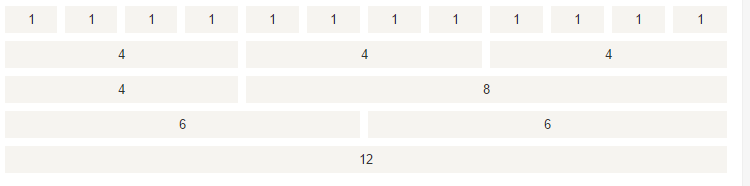

bootstrap栅格布局以及bootstrap3和bootstrap4的区别
分享人：周能
目录
1.背景介绍
2.知识剖析
3.常见问题
4.解决方案
5.编码实战
6.扩展思考
7.参考文献
8.更多讨论
一、背景介绍
什么是栅格系统
Bootstrap 包含了一个响应式的、移动设备优先的、不固定的网格系统， 可以随着设备或视口尺寸的大小的增加而适当地扩展到 12 列。 它包含了用于简单的布局选项的预定义类，也包含了用于生成更多语义布局的功能强大的混合类。
当然也可以使用百分比，12列看作为100%，每一列为20%，就可以实现在一行扩展出5列的效果
二、知识剖析
网格选项
bootstrap使用了五种栅格选项来形成栅格系统，适合不同尺寸的屏幕设备。
col-xs-*超小屏幕 手机 ( <768px) （在bootstrap4里面用col-）
col-sm-*小屏幕 平板 (≥576px)
col-md-*中等屏幕 桌面显示器(≥768px)
col-lg-*中等屏幕 桌面显示器 (≥992px)
col-xl- 超大桌面显示器（≥1200px） （只有bootstrap4里面有xl）
网格选项

工作原理
.container实现固定的宽度并居中呈现,并和其它网格实现对齐 行(.row)是列(.col-*)的横向组合和父容器(它们有效组织在.row下), 每列都有水平的padding值，用于控制它们之间的间隔， 同时在负边距的行上抵消，从而实现列中的所有内容在视觉上是左侧对齐的体验。
三、常见问题
bootstrap3和bootstrap4的区别
四、解决方案
bootstrap4它的源码是采用 Sass 语言编写的
使用flex的布局方式
全部使用了rem为单位（除了部分的margin和padding使用px）
Bootstrap 4 共有5种栅格类，依次是特小(col-)、小(col-sm-)、中(col-md-)、大(col-lg-)、特大(col-xl-)
偏移列通过 offset- 类来设置，例如：.offset-md-4 是把.col-md-4 往右移了四列格。
bootstrap3使用float的布局方式
bootstrap3 共有4种栅格类，依次是特小(col-xs-)、小(col-sm-)、中(col-md-)、大(col-lg-)
bootstrap3里面使用push和pull向左和向右移动
五、编码实战
六、拓展思考
container,row,col的关系
.container类用于固定宽度并支持响应式布局的容器。 .row和.col类配合用于为其赋予合适的排列和内补
七、参考文献
Bootstrap 4 与 3 在栅格系统方面的区别
Bootstrap4与3的区别
八、更多讨论
鸣谢
感谢大家观看
BY : 周能